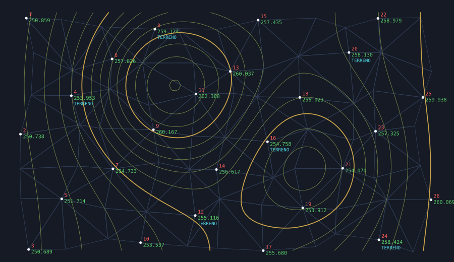
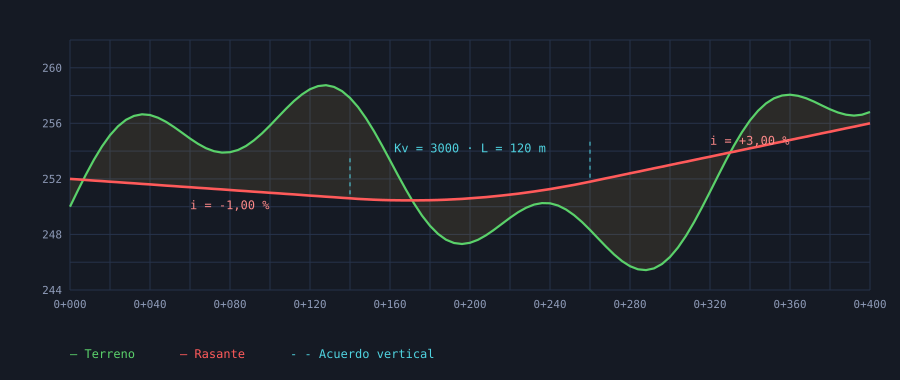
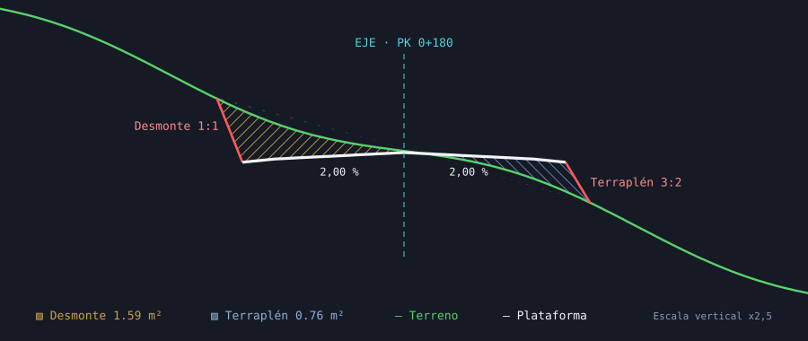

Puntos
STPTIMPImportar puntosSTPTNEWCrear puntosSTPTINTInterpolarSTPTEDITEditarSTPTNUMNumerarSTPTINFOInformaciónSTPTTABTabla de puntosSTPTUNIRUnir por código
Importa la libreta de campo, genera el terreno, saca curvas, perfiles y rasantes, diseña plataformas y cubica, sin salir del CAD que ya usas y con comandos en español.

El flujo de trabajo completo del topógrafo y del técnico de obra civil, paso a paso.
Importa libretas en CSV o TXT y SipleTop deduce solo qué columna es cada cosa (X, Y, Z, número, código…), el separador y si los decimales van con coma o con punto. Si el archivo no tiene cabecera, te enseña cómo va a leer la primera línea antes de importar.
Genera el modelo digital del terreno con líneas de rotura forzadas, guárdalo en el dibujo y regenéralo cuando cambien los puntos. Saca las curvas de nivel con su equidistancia y curvas maestras, y los perfiles longitudinales y transversales de cualquier eje.

Diseña explanadas y viales con sección tipo sobre la rasante: bombeos, taludes de desmonte y terraplén, cunetas y paquete de firme. Dibuja muros y colectores con su zanja, y cubica por diferencia de perfiles o de superficies.

Todas están en el menú SIPLETOP CAD y en sus barras de herramientas, y también puedes escribirlas en la línea de órdenes.
STPTIMPImportar puntosSTPTNEWCrear puntosSTPTINTInterpolarSTPTEDITEditarSTPTNUMNumerarSTPTINFOInformaciónSTPTTABTabla de puntosSTPTUNIRUnir por códigoSTMDTNEWCrear MDTSTBREAKLíneas de roturaSTTINTriangulaciónSTMDTEDITEditar MDTSTMDTSAVEGuardar terrenoSTMDTLOADAbrir terrenoSTMDTINFOInformaciónSTCVNEWCrear curvasSTCVEQUIDEquidistanciaSTCVMAESTRACurva maestraSTCVEDITEditar curvasSTPERFLONGLongitudinalSTPERFRASRasanteSTRASANTERasante con acuerdosSTPERFTRANSTransversalesSTVISORVisor de transversalesSTPERFMUESTRAVisor de muestreoSTPLATPOLExplanadaSTPLATSECSección tipoSTMUROMuro por polilíneaSTCOLECTORColectorSTCUBPERFPor perfilesSTCUBSUPPor superficiesSTCUBLISTListadoSTCUBDIBDibujarSTCOORDCoordenadasSTDISTDistanciasSTANGÁngulosSTAZIAcimutsSTINTERInterseccionesSTRADRadiacionesSTAREAÁrea y perímetroSTIOPTSPuntosSTIOSUPSuperficies LandXMLSTIOPERFPerfiles a CSVSTIODATOSLibreta de campoLos puntos son bloques estándar con atributos, no objetos propietarios: el dibujo se abre sin avisos en cualquier AutoCAD, tenga SipleTop instalado o no.
Trabajas en el CAD que ya conoces, con sus capas, sus estilos y tus plantillas. SipleTop solo añade las herramientas topográficas.
Resúmenes de extensión, cotas y códigos para detectar columnas cruzadas o erratas de la libreta antes de triangular.
Te lo enseño en una videollamada de 20 minutos con tus puntos o con los ejemplos que trae el programa.
O escríbeme directamente a siplecost@gmail.com